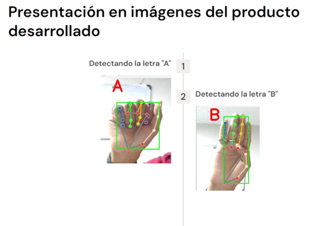

Misael Delgado Reyes
Estudios realizados
Proyectos
Referencias
Me gusta un poco la tecnologia, el color verde y casi todos los tipos de comidas. He tenido la oportunidad de ir a mi primer concierto de REDIMI2 hace 2 años,
tener un emprendimiento con mi familia actualmente y de tener mi propio carro, ademas de estudiar en la UPS. Creo q me graduare sin problemas y consegire un trabajo remoto estable
y tal vez un trabajo de medio tiempo más en mi tiempo libre.
Proyectos
Traductor de lenguaje de señas

- Descripción: Pagina web que traduce el lenguaje de señas de personas sordo mudas a cualquier persona que desee, consiste en una camara que ve viendo las señas y el programa traduce con voz lo que significa cada seña.
- Materias: Arquitectura del computador
Educacion superior
- Universidad Politecnica Salesiana
(2022 hasta la actualidad).